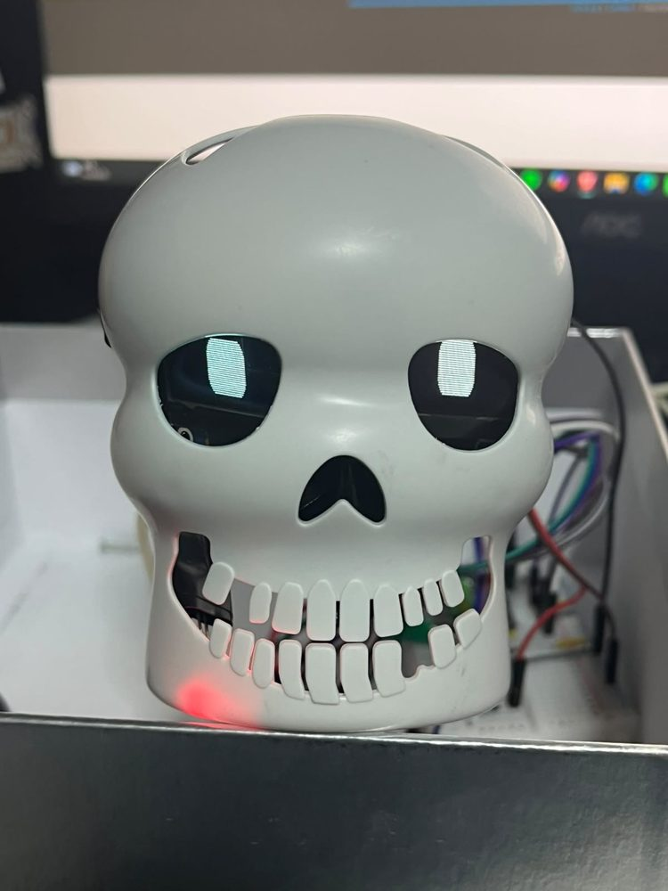

Calaverita parlante con IA
Una calavera con ESP32 que detecta voz con un micrófono I²S, envía la frase a Google Gemini por HTTPS, reproduce la respuesta hablada y anima dos ojos OLED; sin internet responde con audios grabados.
- Estado
- En desarrollo
- Periodo
- oct 2026
- Versión
- calavera_prueba2 (más reciente)
- Categorías
- IoT · ESP32 · APIs · Audio
Objetivo y contexto
Construir un personaje interactivo de Día de Muertos que funcione como asistente de voz con palabra clave, y que siga funcionando sin conexión.
Problema. Explorar un asistente de voz completo en un microcontrolador: escuchar, decidir si le hablan, responder con voz y expresar estados.
Arquitectura del sistema
Una tarea FreeRTOS fijada al núcleo 0 lee el micrófono, decide si hay voz, graba la frase y reproduce audio. El lazo principal anima los ojos, controla el LED y atiende comandos por puerto serie. Con Wi-Fi, la frase grabada se envía como WAV a Gemini, que responde texto; luego se pide la voz y se reproduce. Sin Wi-Fi, usa audios embebidos.
Diagrama de bloques
Pines y buses tomados del código fuente.
Hardware y componentes
| Componente | Función | Conexión | Evidencia |
|---|---|---|---|
| ESP32 DevKit (clásico) | Controlador y Wi-Fi | — | Verificado en código |
| Micrófono INMP441 | Captura de voz | I²S SCK 14 · WS 15 · SD 35 | Verificado en código |
| Amplificador MAX98357A + bocina | Reproducción | I²S BCLK 32 · LRC 25 · DIN 33 | Verificado en código |
| 2 OLED SSD1306 0.91" 128×32 | Ojos | Wire 26/27 y Wire1 21/22 a 400 kHz | Verificado en código |
| Sensor PIR | Saluda al detectar a alguien | GPIO34 | Verificado en código |
| LED RGB | Boca al ritmo de la voz | GPIO 4/12/13 | Verificado en código |
Firmware, software y protocolos
- Captura
- I²S a 16 kHz; elimina componente DC, aplica ganancia y submuestrea a 8 kHz para enviar Verificado en código
- Detección de voz
- Nivel por desviación media; umbral = máx(300, ruido × 3); el ruido se adapta cuando nadie habla Verificado en código
- Grabación
- Búfer circular con 0.4 s previos a la voz y máximo 5 s por frase Verificado en código
- Cliente HTTPS
- Petición POST construida a mano, lectura de respuestas chunked y respaldo de DNS a 8.8.8.8 Verificado en código
- Respuesta
- Si el modelo responde NADA, la frase no iba dirigida a la calavera y se ignora; si no, se pide la voz y se reproduce a 24 kHz Verificado en código
Funcionamiento
- Al arrancar mide 1.5 s de ruido ambiente antes de escuchar.
- Detecta el inicio de una frase, la graba incluyendo 0.4 s previos y la envía como WAV.
- Mientras espera la respuesta, los ojos miran hacia arriba y el LED cambia de color.
- Después de hablar, ignora el micrófono 700 ms para no escucharse a sí misma.
- Seis expresiones de ojos (normal, enojado, feliz, sospechoso, sorprendido, dormido) controlables por puerto serie para depuración.
Decisiones técnicas
- Audio en una tarea aparte
- La lectura I²S bloqueante no congela la animación de los ojos.
- Umbral adaptativo
- Se recalcula solo cuando no hay voz, para que el ruido del lugar no dispare grabaciones.
- Pre-grabación de 0.4 s
- Evita cortar la primera sílaba de la frase.
- Modo sin conexión
- Respuestas pregrabadas cuando no hay Wi-Fi o falla la API.
Fotografías y video

Pruebas y resultados
- Prototipo ensamblado en carcasa con ojos OLED animados y LED de boca funcionando. Foto / video
- Ciclo de escucha, espera de respuesta (LED morado, ojos arriba) y respuesta hablada (LED rojo de boca), en video. Foto / video
Problemas encontrados y soluciones
| Problema | Solución | Fuente |
|---|---|---|
| Fallos de DNS del router | Si no resuelve el servidor, cambia a DNS 8.8.8.8 y 1.1.1.1 y reintenta. | Verificado en código |
| Respuestas HTTP por partes | Lector propio de transferencia chunked. | Verificado en código |
| La calavera se escuchaba a sí misma | Ventana de 700 ms en la que ignora el micrófono tras hablar. | Verificado en código |
Limitaciones y mejoras futuras
Limitaciones
- Depende de un servicio externo y de la calidad de la red para entender la voz.
- El cliente HTTPS no valida el certificado (setInsecure).
- La clave de la API está en el código; debe salir del firmware antes de publicarlo.
Mejoras futuras
- Medir latencia extremo a extremo y tasa de aciertos de la palabra clave.
- Detección de palabra clave local para no enviar audio innecesario.
- Mover la clave a un servidor intermedio en lugar del dispositivo.
Evolución por versiones
- asistente_esp32_gemini · ago 2026
Primer asistente de voz: ESP32 con INMP441, OLED y LED RGB conectado a Gemini.
- calavera_prueba
Versión sin conexión: reacciona a voz con audios grabados y ojos animados.
- calavera_prueba2 · oct 2026
Añade Wi-Fi, Gemini, palabra clave y voz generada.
Código y documentación
github.com/nshtpdrz/calaverita-parlante-esp32
Incluye todas las versiones del firmware, diagrama de bloques e instrucciones para compilar. Las credenciales se leen de un archivo secrets.h que no se publica.